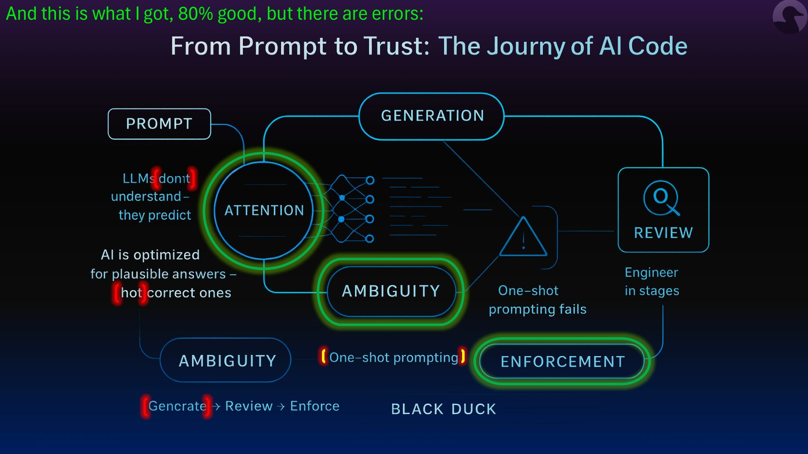
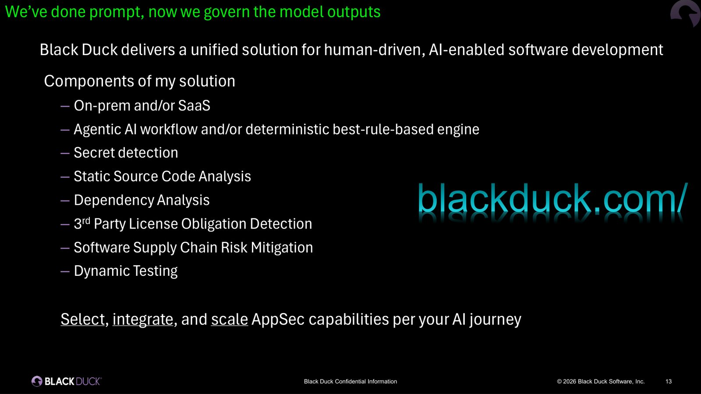
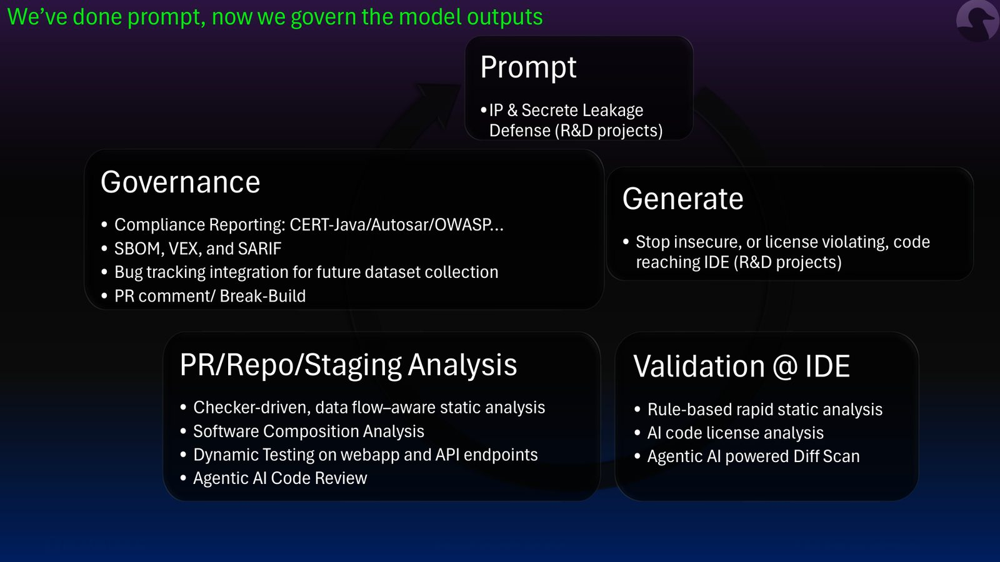
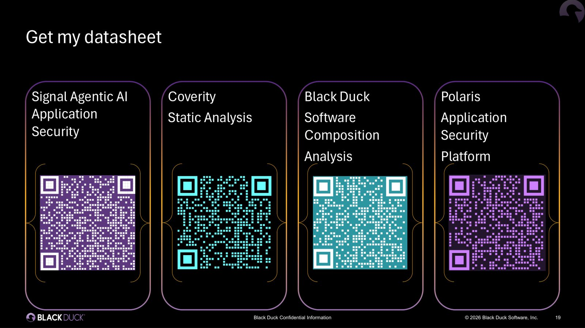

摘要
本場演講深入解析AI輔助開發中生成程式碼的安全信任挑戰。講者從Transformer的Attention機制出發，指出LLM本質上是基於上下文加權計算下一個Token的機率預測，而非理解代碼語意；複雜的Prompt會導致競爭性限制、長距依賴與歧義，進而產生機率漂移並衍生安全漏洞。為此，演講提出了結合確定性規則引擎與Agentic AI的五層治理防禦架構，涵蓋：Prompt防護、生成阻止、IDE層快速確定性掃描（2分鐘內免編譯單檔分析）、PR/Repo/Staging層的資料流感知SAST/SCA與動態測試，以及Governance層產出SBOM、VEX、SARIF合規報告。實務上，建議開發團隊避免一鍵式長Prompt，改採聚焦步驟生成程式碼，並在IDE與PR階段左移安全把關，配合Break-Build機制攔截不安全代碼，建立可信任的自動化程式碼審查流程。
重點整理
- Attention機制透過Query-Key相似度計算注意力權重，模型是根據機率而非常識判斷「it」等代名詞所指涉的對象
- 複雜或衝突的Prompt會產生競爭性限制、長距依賴、歧義與隱藏假設，導致機率估計漂移並產生安全漏洞——模型的問題是「做出了最佳猜測，但猜錯了」
- 建議的AI輔助開發工作流：以聚焦步驟生成程式碼，再透過AI輔助審查與確定性掃描驗證，而非仰賴一次性的一鍵式Prompt
- Black Duck方案涵蓋Prompt防護、IDE層快速確定性掃描（可於2分鐘內完成單檔分析）、PR/Repo/Staging層的資料流感知靜態分析與Agentic AI程式碼審查、以及Governance層的合規報告
- Governance層可產出SBOM、VEX、SARIF等機器可讀成果，並整合Bug Tracking與PR留言、Break-Build機制，以持續累積資料集並強化安全態勢
重點圖片／架構圖




講者背景與主題設定
講者Hugo Yang任職於Black Duck Software亞太區（新加坡），擔任Engineering Principal與APAC Ecosystem Enabler。他先展示自己請GPT產生本場演講大綱的過程，並指出AI生成的大綱雖有八成正確，但仍存在錯誤，藉此帶出「AI生成內容需要被驗證」的核心主題：從Prompt到治理（From Prompt to Governance）。
LLM如何處理Prompt：Attention機制解密
講者以「help me with a webapp using Java and React, it must be...」為例，說明輸入文字會被Tokenize並轉換為Embedding向量，Transformer層再透過Query與Key的相似度計算注意力權重（例如it對webapp的權重為0.7、對Java為0.2、對React為0.1），決定「it」指的是webapp而非Java或React。此過程本質是數學上的機率計算，而非常識理解。
為什麼AI生成的程式碼會出錯
當Prompt處理約110個字（180個Token）以上的長內容時，模型需要透過Query-Key相似度與Softmax正規化計算上下文相依的注意力權重。複雜的Prompt會帶來競爭性限制（Prompt內部需求衝突）、長距依賴（早期需求被「遺忘」）、歧義（多種合理解讀）與隱藏假設（未言明的環境、函式庫或政策）等風險，這些機率估計上的漂移最終會反映在輸出結果中，導致安全漏洞的產生。
Black Duck的治理解方：從Prompt到Governance五層防護
講者提出的解決方案涵蓋地端或SaaS部署、Agentic AI工作流與確定性規則引擎、機密偵測、靜態原始碼分析、依賴分析、第三方授權義務偵測、軟體供應鏈風險緩解與動態測試等能力。具體而言，Prompt階段防止IP與機密洩漏；Generate階段阻止不安全或違反授權的程式碼進入IDE；IDE驗證階段以規則式靜態分析與AI程式碼授權分析，能在多數情境下於2分鐘內完成單檔分析，且不需編譯或建置環境；PR/Repo/Staging分析階段則採用資料流感知的靜態分析、軟體組成分析(SCA)、動態測試，並以Agentic AI Code Review進行語意層級的安全審查，偵測商業邏輯層面的缺陷。
Governance：讓AI輔助開發可被信任
在治理層，Black Duck方案可依CERT、AUTOSAR、OWASP、PCI-DSS等產業標準產出稽核就緒的合規報告，支援AI驅動的威脅建模，並產出SBOM（軟體物料清單）、VEX（漏洞溝通）、SARIF（工具無關的發現整合格式）等機器可讀成果。這些結果可整合進Bug Tracking系統，建立持續改善安全態勢的資料集，並透過PR留言與Break-Build機制將安全把關左移，在不安全程式碼上線前加以攔截。